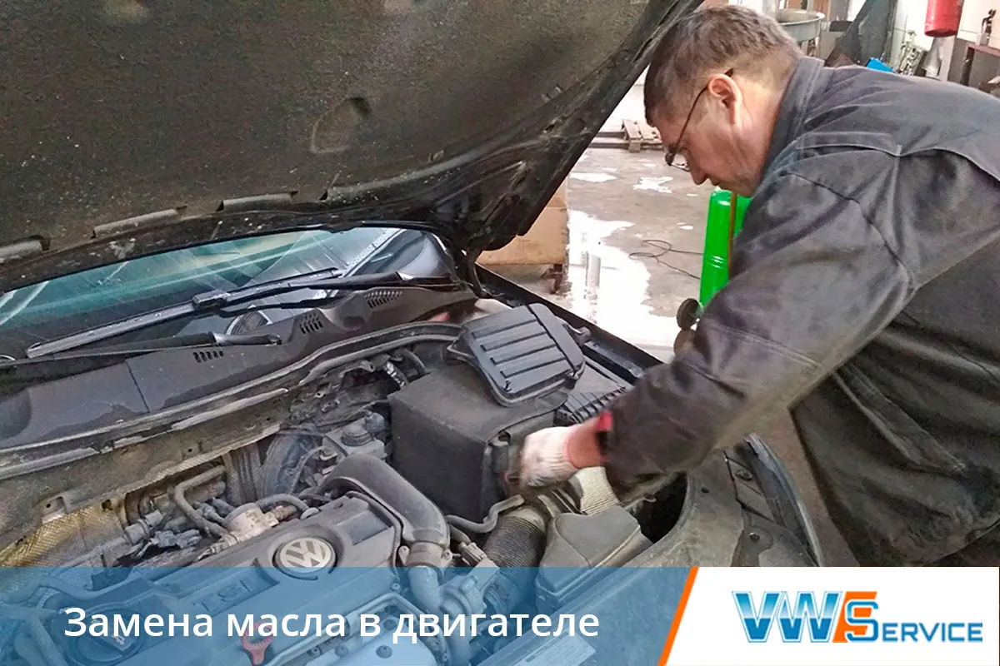
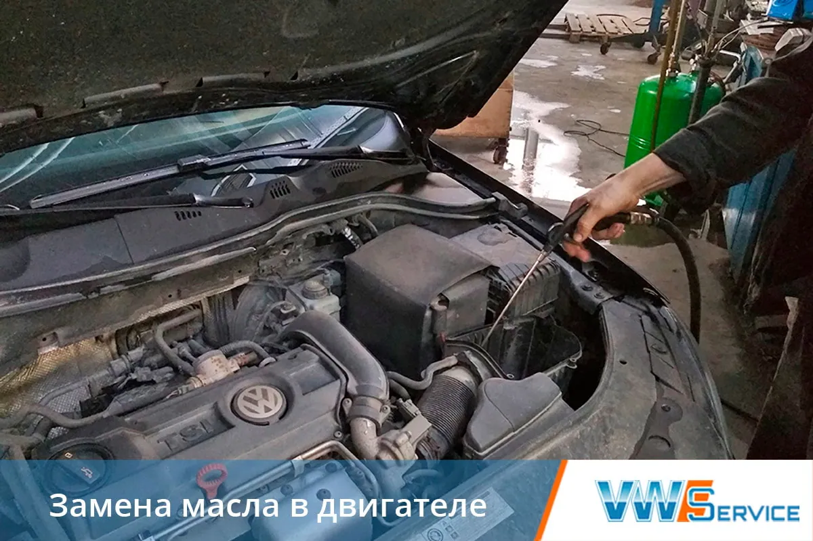
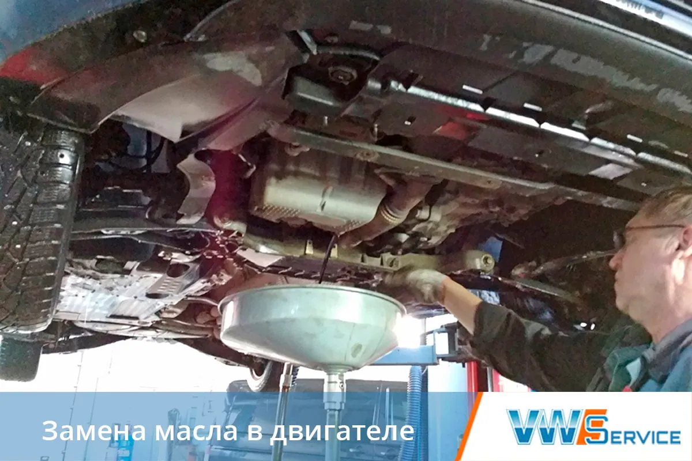
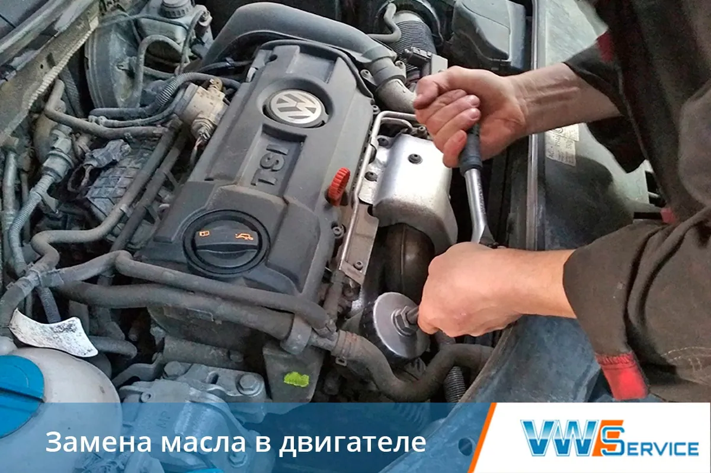
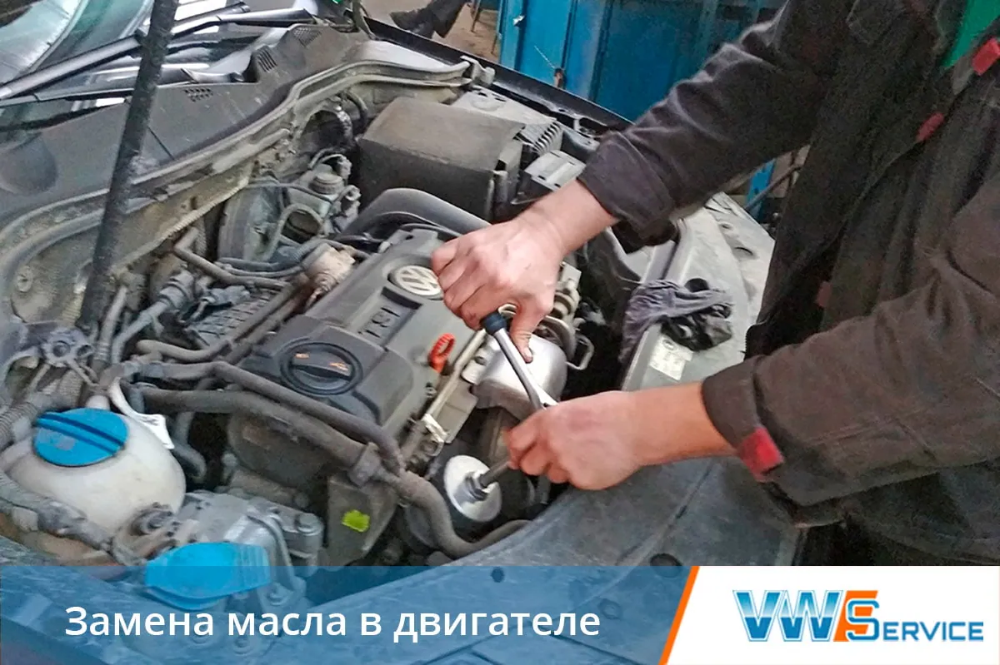
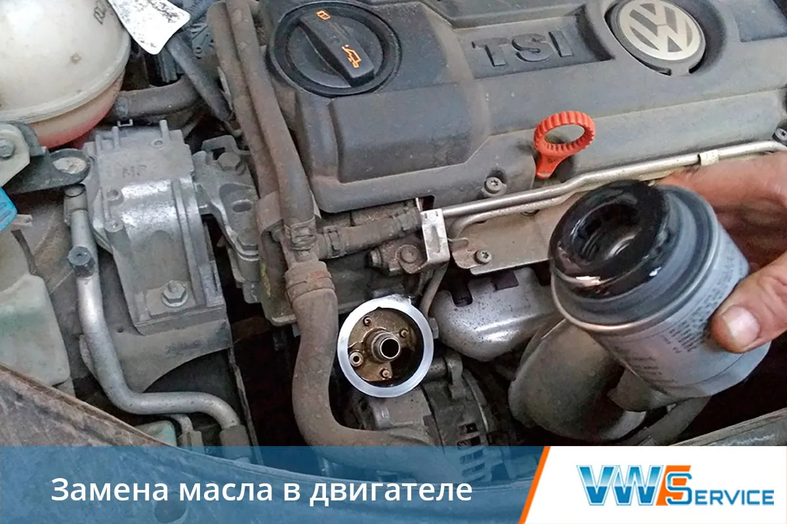
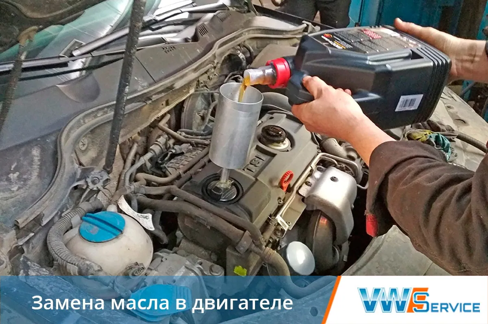
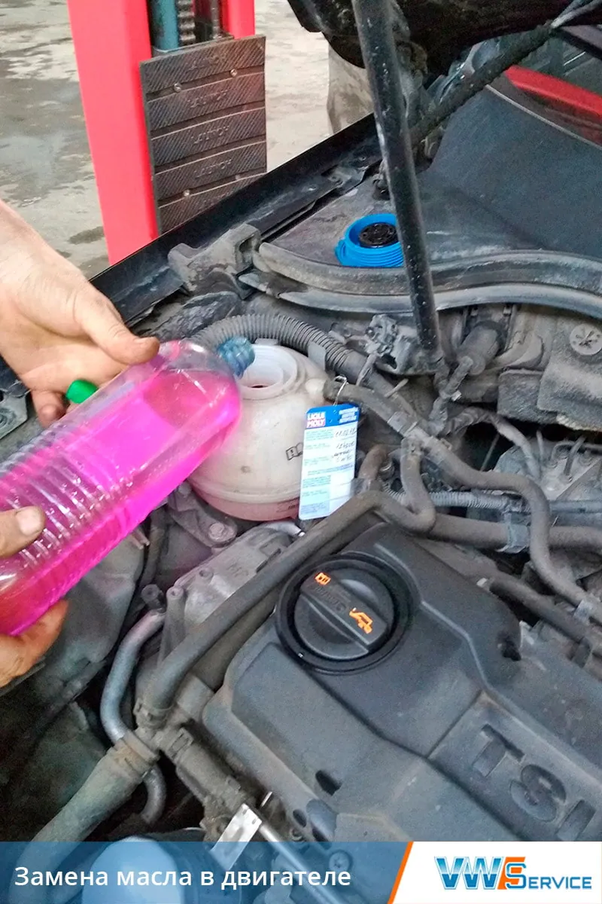
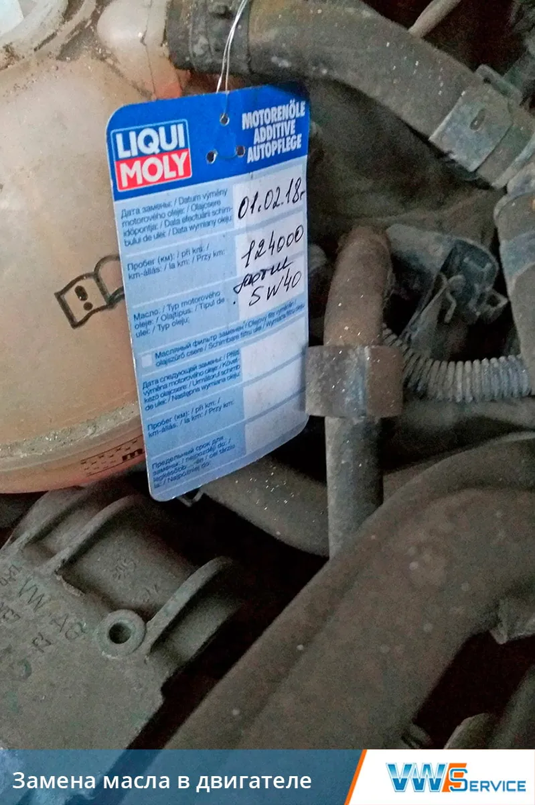

- Главная
- Ремонт автомобилей
- Volkswagen
- Замена масла в двигателе Volkswagen
Замена масла в двигателе Volkswagen
Записаться
Качество моторного масла и частота его замены — факторы, напрямую определяющие срок службы двигателя автомобилей Фольксваген. Вне зависимости от манеры и условий вождения, а также времени года необходимо строго соблюдать сроки проведения ТО по его замене. Причина этому проста: моторному маслу свойственны: старение, загустевание или разжижение. Это в свою очередь может привести к скорому износу элементов двигателя, поскольку масло выполняет сразу несколько очень важных функций:
- защищает детали двигателя от коррозии,
- снижает износ трущихся деталей,
- предотвращает перегрев двигателя,
- выводит продукты износа из рабочей зоны.
Уже более 20 лет наш автотехцентр оказывает услугу экспресс-замены моторного масла в автомобилях Volkswagen, а также реализует все виды этих жидкостей:
- зимние, летние и всесезонные,
- минеральные, синтетические и полусинтетические.
Все автопроизводители в зависимости от типа двигателя предъявляют к моторным маслам определенные стандарты. Специалисты нашего автосервиса в полной мере владеют информацией о допусках и безошибочно подберут подходящее.
Когда необходима замена масла в двигателе Фольксваген?
В зависимости от типа смазочной жидкости сроки замены варьируются:
- каждые 6 000-7 000 км. пробега — для минеральных масел;
- каждые 9 000-12 000 км. — для полусинтетических;
- каждые 15 000 км. — для синтетических.
Тип двигателя также влияет на интервал замены, так на дизельных двигателях замена должна происходить чаще.
Работы по замене моторного масла хоть имеют и свои нюансы, но для специалиста не представляют сложности, что позволяет производить их в экспресс режиме. Состоят они из трех этапов:
- слив отработанной смазочной жидкости,
- замена масляного фильтра,
- заливка масла в двигатель.
Замена масляного фильтра
Каждый раз при смене масла в ДВС – необходимо менять масляный фильтр, т.к. все инородные частицы (примеси) из отработанной смазочной жидкости остаются именно в нем и со временем фильтр забивается. Отказ от его замены вместе с моторным маслом грозит попаданием инородных примесей в двигатель.
Специалисты нашего автотехцентра, заботясь о продлении срока службы вашего автомобиля, проводят замену масляной жидкости только со сменой фильтрующего элемента!
Важно знать! Помимо двигателя VW, масло в автомобиле еще используется:- В коробке переключения передач (КПП), где замена масла должна происходить на автоматических коробках каждые 50 000-70 000 км., на механических — 60 000-90 000 км. пробега;
- В муфте Халдекс, где его замена — актуальный вопрос для владельцев автомобилей Фольксваген.
Техцентр VWS
Поменяем масло в Volkswagen Консультации по ТО
Подбор нужного масла
Быстрая замена в день заявки
Гарантия
Заказать
Полезные документы
Меняем масло









Преимущества нашего автосервиса
Удобное расположение
Собственный склад запчастей
Выполняем работы в срок
Гарантия качества работ

Есть вопросы — спрашивайте!
Не стесняйтесь, Наши специалисты помогут Вам, окажут бесплатную консультацию или запишут на посещение Нашего автосервиса.
Другие работы
Контакты
- г. Москва, 1-й Дорожный проезд, д. 5АЮАО Москвы. Ближайшее метро — «Южная»
- Ежедневно с 8:30 до 20:30Без выходных. Приём автомобилей — круглосуточно
- +7 (495) 260-06-02Эвакуатор: +7 (495) 796-29-99